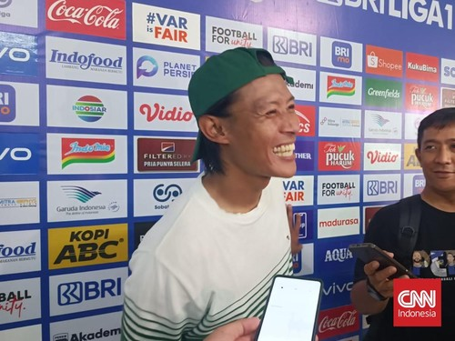

Persib Back to Back Juara, Henhen Nazar Ibadah ke Tanah Suci
Olahraga
Persib Bandung resmi mengunci gelar Liga 1 2024/2025. Ini jadi
gelar yang mereka raih secara beruntun setelah menjuarai
Championship Series tahun lalu.

Arteta Usai Arsenal Keok: Donnarumma Jago Banget
FOTO: PSG Hancurkan Impian Gelar Arsenal